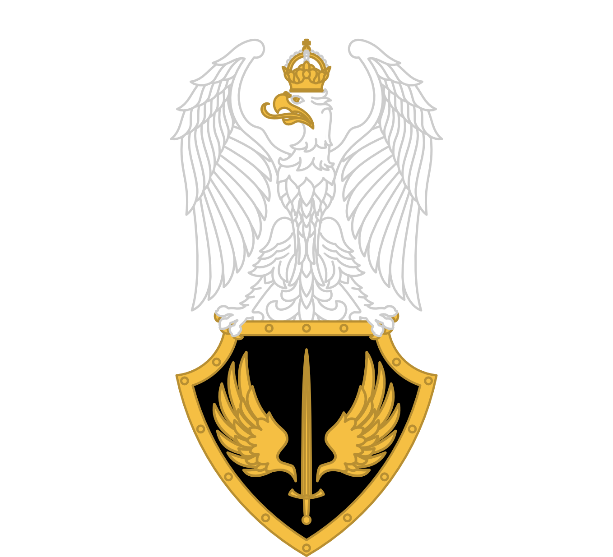
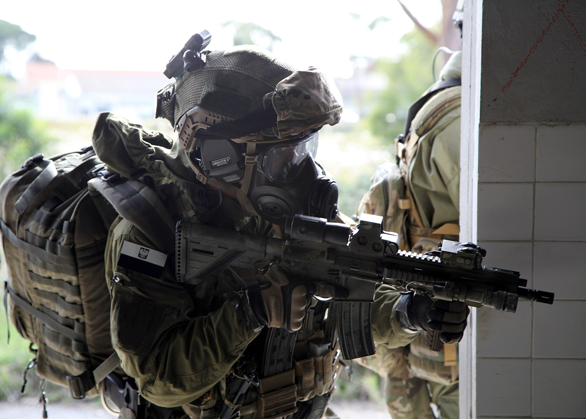
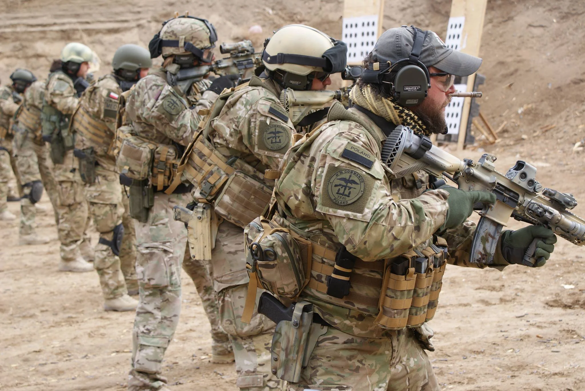

Спеціальні війська Польщі
Дані
- Засновані 24 травня 2007 року
- Чисельність 3500 солдат
- Штаб розташований в Кракові
- Командувач бригадний генерал Войцех Марчвіца
- 
- Операції
- Громадянська війна в Сирії
- Війна в Іраку
- Війна в Афганістані
- Операція «Підтримка демократії»
Організація
- Структура
- Загін "AGAT"
- Морський підрозділ "Formoza"
- Група "Grom"
- Спеціальний загін Командос
- Спеціальний загін «Nil»
- 7-ма ескадрилья спеціального призначення
- Озброєння
- 8 гелікоптерів МІ-17 та 4 S70I Black HAwk
- HMMWV та M-ATV
- З стрілецького озброєння переважно американські гвинтівки, через часту співпрацю ССО США та Польщі
- Стандартна зброя ССО Польщі
- Carl Gustav
- FN Minimi
- HK AG36/G36
- HK416
- FN P90

"Grom" на тренувані

"Grom" на тренувані